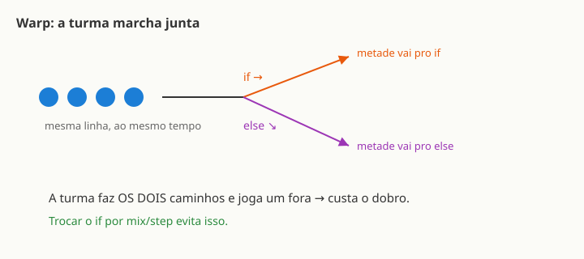

← Mapa do curso · Marco 3 · Módulo 14 de 14
Você já sabe fazer a GPU desenhar coisas bonitas. Falta o último passo: pensar como ela pensa — o que é rápido e o que é caro. Dois shaders que produzem o mesmo visual podem ter custos muito diferentes por dentro. Vamos abrir o capô uma última vez.
Lembra do exército do M6? Cada pixel era um soldado, todos pintando ao mesmo tempo. Agora vamos um nível mais fundo: a GPU não controla cada soldado individualmente — ela agrupa os soldados em pelotões (chamados warps na NVIDIA ou wavefronts na AMD). Um pelotão tem geralmente 32 ou 64 threads, e todos executam a mesma instrução ao mesmo tempo. Não tem como um thread do pelotão adiantar ou atrasar — a turma anda junta, no mesmo passo, na mesma linha de código.
É esse sincronismo que torna a GPU tão poderosa: um único controlador comanda dezenas de threads de uma vez. Mas esse sincronismo tem uma consequência importante quando aparece um if...
Imagine que o pelotão chega num cruzamento: metade dos threads precisa executar o bloco if e a outra metade o bloco else. O que acontece? A turma não pode se separar — tem que andar junta. Então ela faz os dois caminhos: primeiro executa o if (a metade que foi para o else fica parada, mascarada), depois executa o else (a metade do if fica parada). O resultado: o trabalho que poderia ser feito em 1 passo leva 2 passos — custa o dobro.
Isso se chama divergência de branch. Um if cujos vizinhos de pelotão tomam caminhos diferentes é caro. Um if onde todos tomam o mesmo caminho (por exemplo, uma guarda que todos passam ou todos não passam) é de graça.

Os dois quadros abaixo produzem exatamente o mesmo visual: listras verticais alternando vermelho-alaranjado e azul. A diferença está por dentro. O da esquerda usa um if/else clássico — para cada pixel, a GPU escolhe um dos dois blocos. O da direita usa mix — nenhum branch, a conta é feita diretamente com matemática. Seus olhos não veem diferença; o pelotão da GPU sente: mix não divide a turma.
🔀 Com if/else — branch divergente
✅ Com mix — sem branch
O visual é idêntico. Mas no caso do if, os pixels das bordas entre as listras provavelmente caem em pelotões mistos (alguns pixels numa listra, outros na outra) — e a turma executa os dois blocos. Com mix, não há escolha: a conta acontece para todo mundo ao mesmo tempo, sem ninguém ficar esperando.
if que divide pixels vizinhos em caminhos diferentes pode ser caro, e mix/step frequentemente faz o mesmo trabalho sem criar um branch.
Outro botão de otimização é a precisão numérica. Calcular com números de 32 bits (highp/float) é mais caro do que calcular com 16 bits (mediump/half). Para muitas contas de cor e UV, 16 bits são mais do que suficientes — e rodam mais rápido em GPUs móveis.
highp apenas onde a precisão importa: posições, cálculos de profundidade, distâncias grandes.mediump costuma ser suficiente — e mais barato.precision mediump float; que o motor injeta desde o M1 é exatamente esse trade-off.half pra forçar 16 bits. Em GLSL ES, a mesma economia vem dos qualificadores: mediump na prática usa ~16 bits — é o que o motor já injeta desde o M1.if é ruim?if que divide pixels vizinhos do mesmo pelotão. Se todos os pixels de um pelotão tomam o mesmo caminho (condição uniforme, como um parâmetro global), o custo é zero. O problema é quando a condição depende da posição do pixel e divide a turma ao meio.mix/step sempre substitui if?mix(b, a, step(limiar, x)) faz o que if (x > limiar) a; else b; faz — repare que a ordem inverte: o primeiro argumento do mix é o valor do else (quando x < limiar), e o segundo é o do if.Você começou pintando um único pixel com gl_FragColor — e chegou aqui. Olha o caminho:
vec3 de cor ao padrão animado com u_time, entendendo por que a GPU é tão rápida (M6).Você escreveu código que roda em milhares de núcleos em paralelo, 60 vezes por segundo. Você entende o pipeline do vértice ao pixel. Você sabe o que é caro e o que é grátis. Isso é programar a GPU de verdade. 🎉
Missão final: abra seu Efeito Autoral (M12) — aquele shader que você criou do zero como Projeto-Vitória 3. Procure: tem algum if que divide pixels vizinhos? Daria pra trocar por um mix ou step? Justifique sua resposta em 2–3 frases. Essa é a avaliação mais honesta do curso: aplicar o que você aprendeu no código que você criou.
if que divide o pelotão faz a GPU executar os dois caminhos — custa o dobro.mix/step frequentemente substitui if sem criar branch.mediump/half é mais barato que highp/float onde a precisão não é crítica.Ligue cada termo ao seu significado (escreva a letra):
Do primeiro pixel ao poder da GPU: você percorreu os três marcos, escreveu shaders 2D e 3D, iluminou objetos, entendeu o pipeline completo — e agora sabe o que acontece por dentro quando o shader roda. Parabéns. 🎉
Você terminou — mas isto é só o começo do que dá pra fazer. Pra onde ir:
O mais importante: continue mexendo no seu Efeito Autoral (M12). Todo shader que você admira começou exatamente assim — alguém trocando números e vendo o que muda.